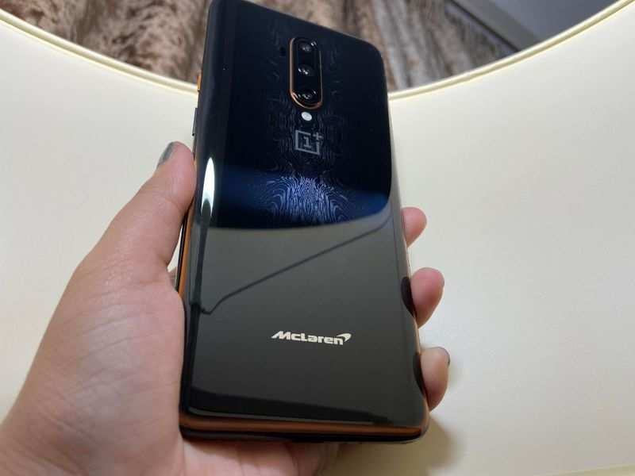

Meet the new OnePlus phone that costs almost same as the latest iPhone

OnePlus has launched its most premium smartphone of the year 2019 -- OnePlus 7T McLaren Edition, special edition of its all-new OnePlus 7T Pro. This is the second smartphone from the Chinese smartphone company to be launched in association with British motor racing team. Priced at Rs 58,999, the smartphone sports almost the same price tag as one of the latest-generation Apple iPhone, iPhone 11. Launched at price tag of Rs 64,999, the iPhone 11 is available at a starting price of Rs 58,900 with select offers. Wonder what all the most-powerful OnePlus smartphone offers? Read on to find out.